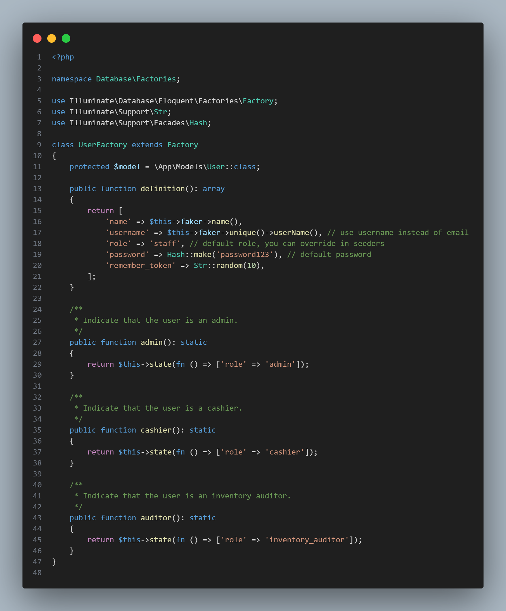
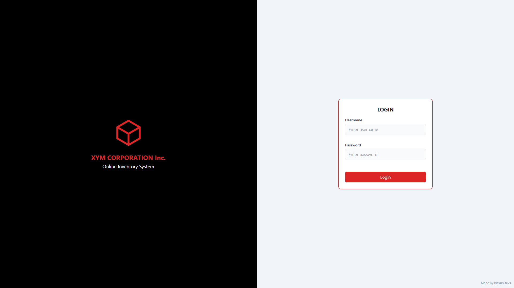
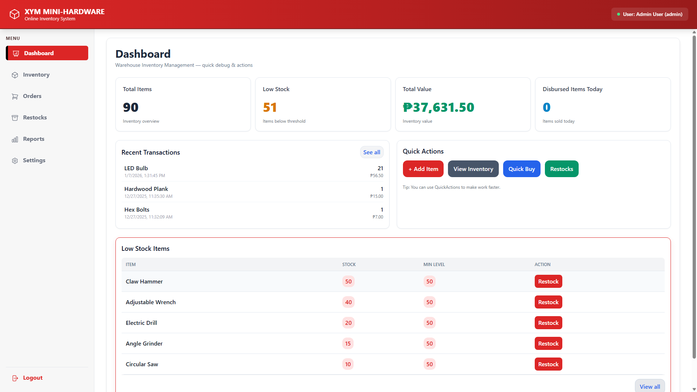

A 3rd-year BSIS student focused on crafting robust backend systems and engaging frontend experiences.
Currently pursuing my Information Systems degree, I bridge the gap between heavy technical backend architecture and intuitive frontend digital experiences. From designing efficient databases to building responsive user interfaces, my focus is always on clean, scalable, and effective execution.
A point-of-sale system architected to streamline inventory and sales tracking. Involved comprehensive ERD planning, user interface prototyping, and structured project phasing from inception to deployment.
Developed a startup pitch conceptualizing an Augmented Reality integration for major online shopping platforms, addressing user experience gaps and validating problems through targeted surveys.



A visual gallery featuring screenshots of my latest web development interfaces, UI designs, and system architectures.